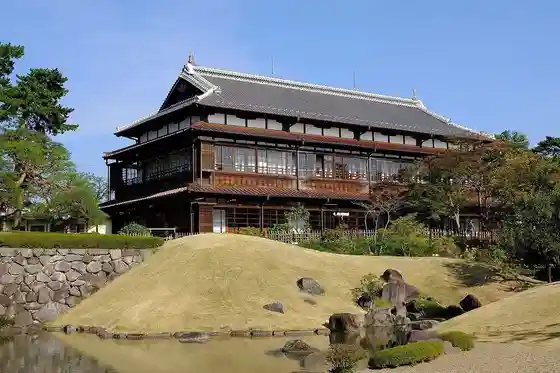
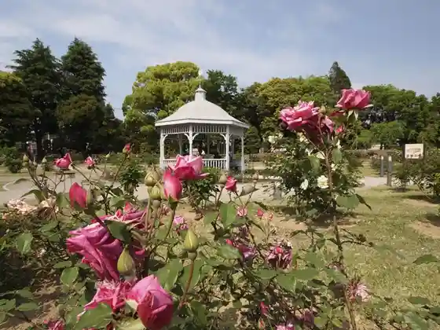
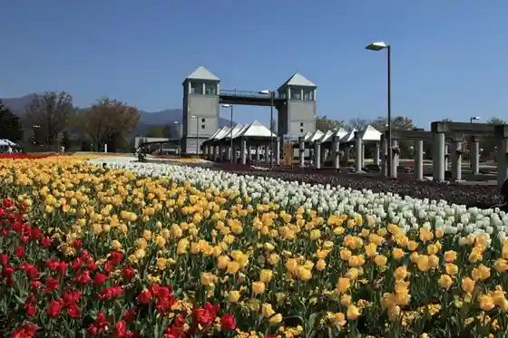
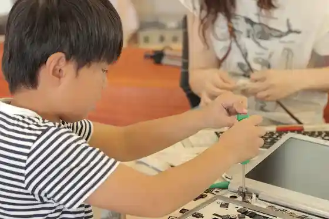

Rinko Kaku
Maebashi, Gunma · 027-280-6511 · Official / source link

Shikishima Koen Kadokura Teku no Bara Sono
Maebashi, Gunma · 027-232-2891 · Official / source link

(Gunma Flower Park +) (Gunma Furawa Park Purasu)
Maebashi, Gunma · 027-283-8189 · Official / source link

Akagi Fuzu (Kabu)
Maebashi, Gunma · 027-261-2345 · Official / source link
(Kabu) Mo no : Fakutorii
Maebashi, Gunma · 027-212-8830 · Official / source link

Maebashi Sanshi Memorial Museum
Maebashi, Gunma · 027-280-6511 · Official / source link
Tourist Farm Akagioroshi
Maebashi, Gunma · Official / source link
Kiyoshi ((Kabu) Machida Shuzo Mise)
Maebashi, Gunma · 027-266-0052 · Official / source link
Katsuragawa (Yanagisawa Shuzo (Kabu))
Maebashi, Gunma · 027-285-2005 · Official / source link
Suga no Sono
Maebashi, Gunma · 027-225-2116 · Official / source link
Ogo Guriinfurawa Ranch
Maebashi, Gunma · 027-283-5792 · Official / source link
Akagi Jinja Sando Matsunami Ki
Maebashi, Gunma · 027-283-1268 · Official / source link
Akagi Shirakaba Ranch
Maebashi, Gunma · 027-287-8402 · Official / source link
Kankyo Shisutemu Ogikubo Park
Maebashi, Gunma · 027-269-0979 · Official / source link
Hagiwara Sakutaro Kinen Mizu to Midori to Shi no Machi Maebashi Literature Museum
Maebashi, Gunma · 027-235-8011 · Official / source link
Gunmaken Cho
Maebashi, Gunma · 027-223-1111 · Official / source link
Runapaku
Maebashi, Gunma · 027-231-6774 · Official / source link
Atsu Maebashi
Maebashi, Gunma · 027-230-1144 · Official / source link
Akagi Shrine (Onuma Lakeside)
Maebashi, Gunma · 027-287-8202 · Official / source link
Roadside Station Akagi no Megumi
Maebashi, Gunma · 027-288-0378 · Official / source link
Roadside Station Fujimi
Maebashi, Gunma · 027-230-5555 · Official / source link
Gunmaken Baji Park Bijita Sei Joba Shisetsu
Maebashi, Gunma · 027-288-7002 · Official / source link
Akagi Onuma Wakasagi Tsuri
Maebashi, Gunma · 027-287-8511 · Official / source link
Taguchi Town Hotaru Village
Maebashi, Gunma · 027-234-3873 · Official / source link
Kakuman Fuchi
Maebashi, Gunma · 027-287-8402 · Official / source link
Akagiyama / Akagi Onuma
Maebashi, Gunma · 027-287-8402 · Official / source link
Akagi Shrine (San Yoru Sawa)
Maebashi, Gunma · 027-283-1268 · Official / source link
Ai no Yama Baths
Maebashi, Gunma · 027-264-3030 · Official / source link
ISK Maebashi Mise
Maebashi, Gunma · 027-289-2272 · Official / source link
Maebashi Hyakka
Maebashi, Gunma · 027-223-1181 · Official / source link
Torii Toge
Maebashi, Gunma · 027-287-8402 · Official / source link
Maebashi Sogo Sports Park
Maebashi, Gunma · 027-268-1911 · Official / source link
Nippon Kyanpakku Omuro Park
Maebashi, Gunma · 027-225-2116 · Official / source link
Raku Ho Do Maebashi Park
Maebashi, Gunma · 027-231-0002 · Official / source link
Mine Park
Maebashi, Gunma · 027-269-3838 · Official / source link
Shikishima Park
Maebashi, Gunma · 027-225-2116 · Official / source link
Hai no to Maebashi Kodomo Park
Maebashi, Gunma · 027-225-2116 · Official / source link
Gunmaken Shogaigakushu Center Shonen Science Museum
Maebashi, Gunma · 027-220-1876 · Official / source link
Akagi Onsen
Maebashi, Gunma · 027-235-2211 · Official / source link
Akagikogen Onsen
Maebashi, Gunma · 027-283-5211 · Official / source link
Ogo Onsen
Maebashi, Gunma · 027-283-2508 · Official / source link
Takizawa Onsen
Maebashi, Gunma · 027-283-5711 · Official / source link
Taiyo no Kane
Maebashi, Gunma · 027-257-0675 · Official / source link
Hisutoria Maebashi
Maebashi, Gunma · 027-226-6013 · Official / source link
Hirosegawa Zokei Kan
Maebashi, Gunma · 027-212-7022 · Official / source link
Joshu Zeitaku Butadon (Butariko)
Maebashi, Gunma · 080-8581-8507 · Official / source link
Famazu Kafe Mintotan
Maebashi, Gunma · 027-212-4110 · Official / source link
Su no Piiku Akagi Kyanpufiirudo
Maebashi, Gunma · 027-289-0482 · Official / source link